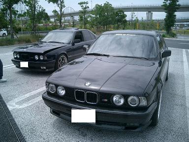 到着してすぐエディさん登場＾＾ |
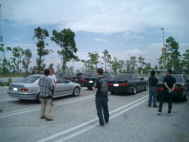 伊勢湾岸SAに集まってくるBMWたち どんどん台数が増えてきます＼（＾ ＾）／ |
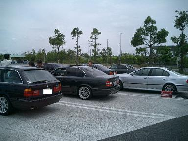 一画を占拠する軍団♪ |
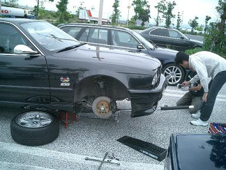 「はじめまして＾＾/」なんて挨拶を交わしてると作業が始まりました(*・ω・) johnny号のスタビブッシュの交換です。 |
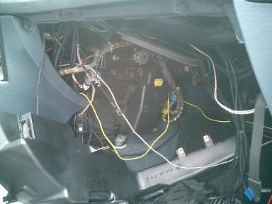 アルタァ号のマイクロフィルターの有無を調べるの図 89年式のアルタァ号にはマイクロフィルターはついていませんでした。 でもエバポレーターは綺麗でした！ |
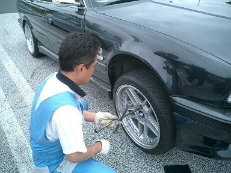 レンチを回すミッチョさん＾＾そろそろ完成です。 |
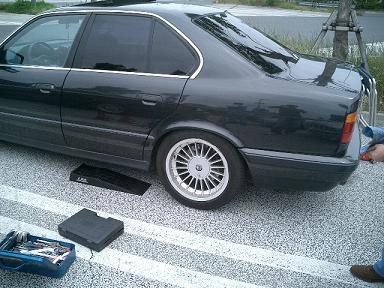 こちらでは、medama1goさんがマフラー吊りゴムの修正をされてました。 E34が集まるところにメンテはつきものです＾＾ |
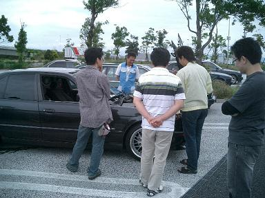 一通り作業が終わりエディ号に集まる。。 なぜかというと・・・ |
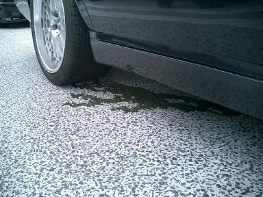 クーラントが・・・Σ(ﾟДﾟ|||)━━ |
|
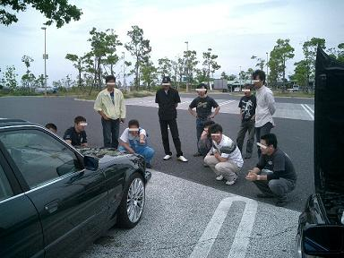 USモデルのtoshi号を教材にミッチョさんのE34講座＾＾ フォグやヘッドライトのレンズカットが日本仕様と違いました。 |
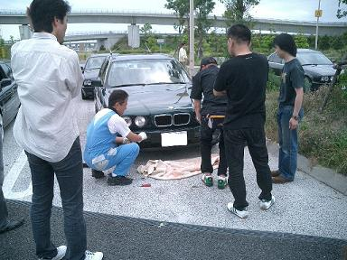 やっぱり実技がメインなE34・・・（笑 バンパーを外します。 |
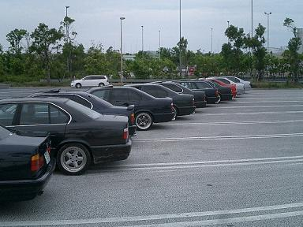 一列に並べてみました。 カッコイイ・・・・・ |
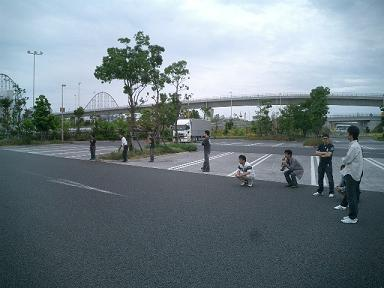 「E34はこの角度がイイネ」なんて聞こえてきそうな一コマ。 |
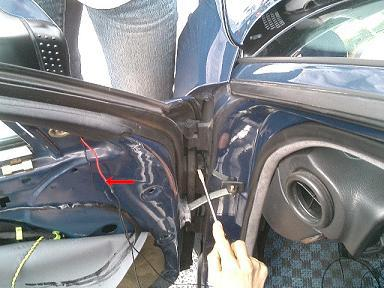 Mゴロー号のミラーに小ネタを仕込む。。 みなさんにアドバイスをいただき（ほとんど作業してもらいましたm(__)m） 下準備完了（＾∀＾） |
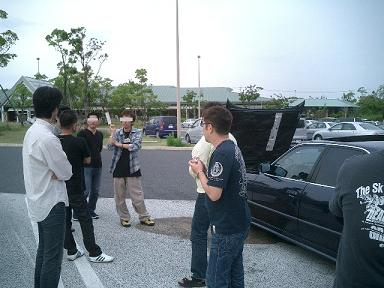 その後もウダウダは続き、、そろそろお開きです。。 みなさんお気をつけて(^3^)/ |
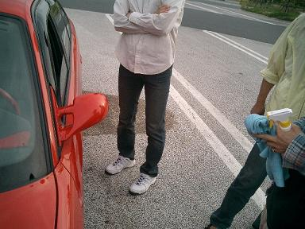 ブリスVSゴールドグリッター NENA号のミラーを磨く(*ﾟ▽ﾟ*) |
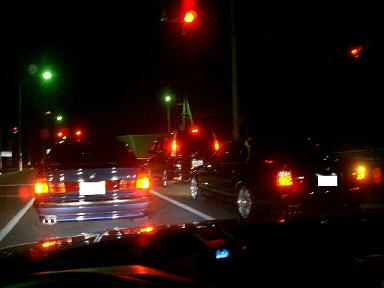 その後、アルタァさん、エディさんと喫茶店へ行きさらにウダウダ＾＾； はたしてエディさんは水漏れに負けることなく帰れたのでしょうか・・・ |
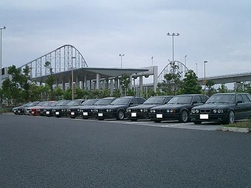 今回もたくさんの方々とE34な輪が広がりました＾＾ 参加台数１４台 やっぱりみなさんE34が大好きなんだなぁ！って感じた１日でした。 E34 M5・・・ミッキさん E34 535i・・・アルタァさん、エディさん、medama1goさん、Mゴロー E34 530i・・・けろよんさん E34 530iTR・・・toshiさん E34 525iTR・・・kidsさん E34 525i・・・NENAさん、タツさん、せっきーさん、ナルさん、johnnyさん E39 525i・・・ミッチョさん
|